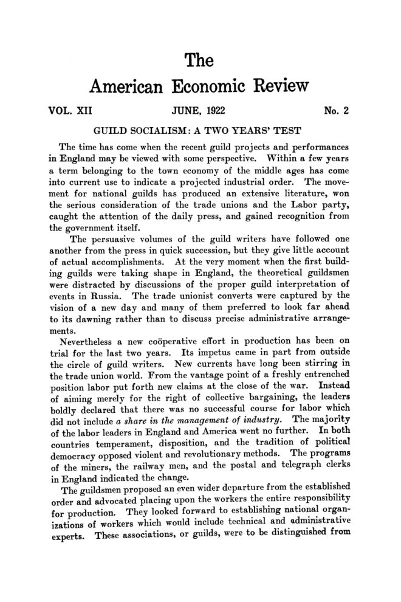

Hewes e as guildas que saíram do papel
Leitura: 8 min
Amy Hewes compara mais de uma década de teoria do socialismo de guilda com os dois primeiros anos das guildas de construção inglesas, que trocaram a garantia financeira pela garantia do trabalho.


Em 20 de janeiro de 1920, os comitês que representavam os trabalhadores organizados da construção na região de Manchester aprovaram a criação de um Building Guild Committee e se comprometeram a eleger um representante de cada sindicato. A proposta viera de S. G. Hobson, um dos primeiros teóricos do socialismo de guilda, que sugerira à Operative Bricklayers Society romper o impasse habitacional com uma guilda que detivesse o monopólio do trabalho na construção.
Amy Hewes, do Mount Holyoke College, conta essa história na abertura da American Economic Review de junho de 1922. O artigo tem duas partes: a evolução da teoria das guildas e de sua organização de propaganda, a National Guilds League, e um resumo dos dois primeiros anos das guildas de construção. A tese é que a experiência deu à longa discussão anterior um interesse apenas acadêmico e deveria obrigar a teoria a se refazer.
De onde veio a ideia das guildas?
Hewes situa a origem em Arthur J. Penty, arquiteto, que em 1906 publicou The Restoration of the Gild System, crítica ao comercialismo moderno em nome dos métodos medievais de produção, com ataques à divisão do trabalho e às máquinas. Em 1912, S. G. Hobson publicou no New Age, de A. R. Orage, a série de artigos reunida depois em National Guilds, uma acusação ao sistema assalariado. G. D. H. Cole tentou levar as ideias à Fabian Society, não conseguiu, saiu e em 1915 organizou a National Guilds League.
Em Self-Government in Industry, de 1917, Cole apresentou a versão mais detalhada: o Estado seria a associação dos consumidores, os sindicatos reorganizados por indústria seriam as guildas dos produtores, e nenhum dos dois seria soberano. A guilda garantiria ao trabalhador pagamento no emprego e no desemprego, controle da produção e direito sobre o produto. Hobson, em 1920, preferiu um Estado supremo que delegasse às guildas o comando da produção.
A dissidência veio do major C. H. Douglas, engenheiro. Em Economic Democracy, de 1919, e Credit Power and Democracy, de 1920, sustentou que o controle real da indústria estava com os financistas e que o poder de compra distribuído na produção era menor que o necessário para comprar o produto; propôs bancos de trabalho e controle comunitário do crédito. A conferência especial da Liga, em dezembro de 1920, rejeitou o esquema por ampla maioria, e Cole, em fevereiro de 1921, condenou-o sem rodeios.
“Impraticável na prática, insustentável economicamente e indesejável moralmente.” (“unworkable practically, unsound economically, and undesirable morally.”)
O juízo de Hewes sobre essa literatura tem dois lados. De um, ela a considera saturada de teoria, apoiada num conhecimento pouco profundo da sociedade econômica: Cole discute o controle das indústrias mecânicas e navais sem examinar matérias-primas, máquinas ou destino dos produtos. De outro, reconhece que Penty e Cole têm razão ao dizer que o coletivismo não satisfez o trabalhador britânico, e que esses livros merecem lugar permanente na história dos movimentos sociais.
Por que a Liga se dividiu?
Fundada em Londres na Páscoa de 1915, a National Guilds League tinha por objetivo abolir o sistema assalariado e estabelecer o autogoverno na indústria por guildas nacionais, em conjunto com um Estado democrático. Publicava panfletos e, desde 1917, um mensal, The Guild Socialist, antes The Guildsman, editado por G. D. H. e Margaret Cole desde 1920. Em 1920 teve de definir posição sobre agricultura, associações profissionais, cooperativismo e o sistema soviético. As duas primeiras questões trouxeram acordo; a terceira, controvérsia; a quarta quase destruiu a organização.
Em maio de 1920, uma ala esquerda simpática à Rússia soviética obteve vitórias apertadas; a direita, que se dizia gradualista, perdeu por pequena margem a moção que rejeitava a ditadura do proletariado. Na conferência especial de dezembro, os seis membros da ala direita do comitê executivo renunciaram. Em 1921 a Liga perdeu grupos locais e membros e teve de funcionar em bases voluntárias. Hewes cita W. Mellor, membro da Liga, na Labour Monthly de novembro de 1921.
“Desde 1917 o socialismo de guilda vem perdendo força de modo constante e progressivo.” (“since 1917 Guild Socialism has been constantly and progressively waning in power.”)
Seria um erro, adverte a autora, medir o movimento pela sorte da Liga. As guildas em funcionamento não tinham filiação formal a ela, alguns sindicatos que as formaram nem sabiam de sua existência, e seus membros eram sobretudo intelectuais, não assalariados.
Como uma guilda conseguiu contratos?
A ocasião foi a falta de moradias. Construir casas deixara de ser lucrativo, e o governo ofereceu subsídios de até £ 260 por casa ao construtor individual, ao mesmo tempo que restringia aluguéis. A lei de habitação de julho de 1919 permitia ao governo emprestar às cidades e cobrir perdas acima do produto de um penny por libra no imposto local. Quase todos os primeiros contratos das guildas foram moradias operárias de conselhos municipais.
Os sindicatos argumentavam que a capacidade de fornecer trabalho valia tanto quanto um depósito em ouro: um empreiteiro pode ser financeiramente sólido e não construir por falta de mão de obra. Depois de negociações de janeiro a julho de 1920, um memorando do Ministério da Saúde fixou os termos, adotados em setembro: custo efetivo de materiais e trabalho, mais £ 40 por casa e 6% do custo estimado; qualquer excedente iria para a melhoria do serviço, e uma cláusula permitia encerrar o contrato se os custos superassem a estimativa.
A Co-operative Wholesale Society, a maior vendedora de materiais de construção do reino depois do governo, deu o que faltava: fornecimento garantido, saque a descoberto de cerca de 2% do valor dos contratos e, pela Co-operative Insurance Society, seguro do contrato com responsabilidade limitada a um quinto do custo. Em Londres, a London Guild of Builders, criada em 20 de abril de 1920 sob a direção de Malcolm Sparkes, aceitava também obras privadas e não buscava monopólio do trabalho.
O que aconteceu quando o governo recuou?
Os empreiteiros reagiram. O secretário da guilda de Manchester dizia construir casas de £ 150 a £ 200 mais baratas, e Stephen Easten, presidente da federação patronal, considerou injustos os termos. No início de 1921 o ministério deixou de aprovar novos contratos até que as condições mudassem. As guildas não cederam no pagamento contínuo e passaram a buscar reparos e casas para compradores privados. Em julho de 1921, mês em que o governo anunciou o fim dos subsídios, as guildas de Manchester e Londres fundiram-se na National Building Guild.
Em dezembro de 1921 a guilda lançou um mensal, anunciou um empréstimo de £ 150 mil entre membros e simpatizantes e registrou contratos acima de £ 2 milhões e recebimentos de £ 600 mil. Vieram também problemas de administração: comitês de obra que pediam funções além de cantinas e esportes, e conflitos com as regras de ofício dos sindicatos.
O que faltava provar?
No balanço de Hewes, as guildas demonstraram que o pagamento contínuo era viável na construção, que podiam construir mais barato que os empreiteiros e que seus trabalhadores rendiam mais nas mesmas obras. Mas começaram em circunstâncias excepcionais: pouco capital exigido, obras de caráter semipúblico, eficiência geral baixa e demanda premente por casas. Quando a demanda arrefecesse, os trabalhadores menos necessários ou menos eficientes relutariam em sair, os custos subiriam e a posição competitiva sofreria. A formação de gerentes continuava sem solução. Hobson via o próximo problema no crédito; os teóricos, conclui a autora, pareciam marcar passo, deixando o avanço a quem trabalhava na produção.
Na minha leitura
Na minha leitura, o artigo vale pelo contraste de método. Hewes não julga as guildas pela coerência da doutrina, mas pelos termos do contrato: quem garante a obra, quanto se paga por casa, quem fica com a economia de custo. É nessa contabilidade que aparecem as questões que a teoria deixara de lado, como crédito, fornecimento de materiais e seguro, resolvidas na prática pela entrada de uma terceira parte, a cooperativa atacadista.
O segundo ponto é a distinção entre resultado e condição. Custos menores e bom rendimento do trabalho num mercado com escassez de casas e pleno emprego não dizem muito sobre o desempenho num ciclo de baixa. Hewes deixa a pergunta aberta: a regra do pagamento contínuo, central para as guildas, é exatamente a que seria testada quando a demanda caísse.
Glossário
- Socialismo de guilda
- proposta de entregar a gestão de cada indústria a guildas nacionais de trabalhadores, ao lado de um Estado que representa os consumidores.
- Coletivismo
- termo da época para a gestão estatal da indústria, defendida pela Fabian Society.
- Pagamento contínuo
- garantia de salário também em mau tempo, feriados e férias curtas.
- Co-operative Wholesale Society
- cooperativa atacadista do movimento cooperativo britânico, com departamento de construção e banco.
- Cláusula de rescisão
- dispositivo que permitia encerrar o contrato se os custos superassem a estimativa mais os reajustes.
- Crédito social de Douglas
- proposta de controle comunitário do crédito e de compensar a diferença entre poder de compra e preço do produto.
Fontes
- Guild Socialism: A Two Years' Test — Amy Hewes (Mount Holyoke College) (pp. 209–237). JSTOR · Internet Archive (PDF)
- Edição completa, com os demais artigos: Nº 176 do Arquivo.
Documento em domínio público (EUA, publicado antes de 1931), via JSTOR Early Journal Content e Internet Archive. Resumo e comentário do autor deste site, sem afiliação com a American Economic Association. Encontrou um erro? Escreva: a correção é publicada no próprio texto, com data.
↑ Nº 176 · As guildas inglesas, a guerra alemã a crédito e as zonas francas Fairchild, Rist e a conta da guerra alemã →